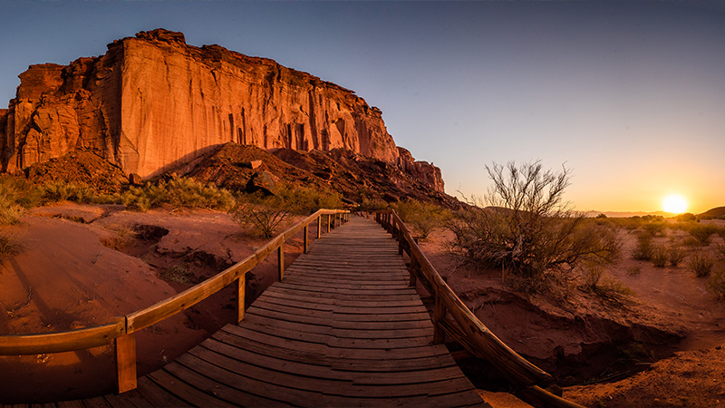

Todas las caras de Argentina
Argentina posee una increíble variedad no solo de paisajes, desde la Cordillera de los Andes hasta el océano Atlántico de oeste a este y desde norte árido pasando por sierras verdes, ríos cristalinos y lagos turquesas hasta llegar al fin del mundo sino tambén una gran variedad de climas y costumbres
Norte
 ¡Descubrí todo lo que podés hacer en la Región Norte!
Leer más
Litoral

¡Descubrí todo lo que podés hacer en la región Litoral de Argentina!
Leer más
Patagonia

¡Descubrí todo lo que podés hacer en Patagonia!
Leer más
Cuyo

¡Mirá más de lo que podés hacer en la Región de Cuyo!
Leer más
Córdoba
¡Descubrí todo lo que podés hacer en la Región de Córdoba!
Leer más
Buenos Aires

¡Vení a descubrir Buenos Aires!
Leer más